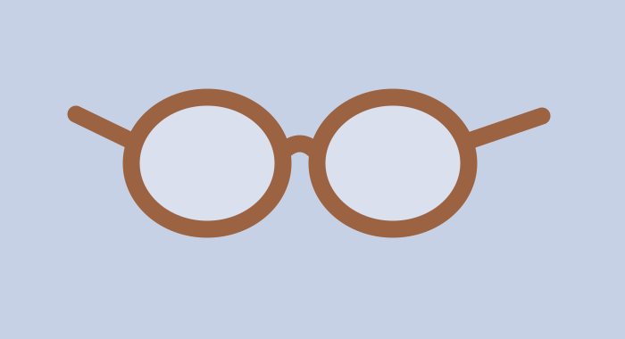

گفتوگوی اولیه
از عادتهای مطالعه، کار با نمایشگر و نیازهای روزمره میپرسیم.

عینک و عدسی مناسب با سبک زندگی تو. اندازهگیری دقیق و فرصت کافی برای امتحان فریمها.
نوبت سنجش بیناییفرم صورت، فاصلهٔ چشمها و کاری که هر روز انجام میدهی در انتخاب عینک تأثیر دارند. در اینجا میتوانی شکل فریم موردعلاقهات را پیدا کنی.

لبههای نرم و پل قوسی برای یک انتخاب روزمره.
از عادتهای مطالعه، کار با نمایشگر و نیازهای روزمره میپرسیم.
بررسی حضوری دید با هماهنگی قبلی انجام میشود.
دستهها و پل فریم را برای قرارگیری راحتتر تنظیم میکنیم.
بله، هنگام ثبت درخواست مدلهای موردعلاقه را بنویس.
عینک فعلی و آخرین نسخهٔ در دسترس را همراه داشته باش.
جزئیاتت را وارد کن و خلاصهٔ درخواست را برای خودت بگیر.
 انتخاب این قالب
انتخاب این قالب